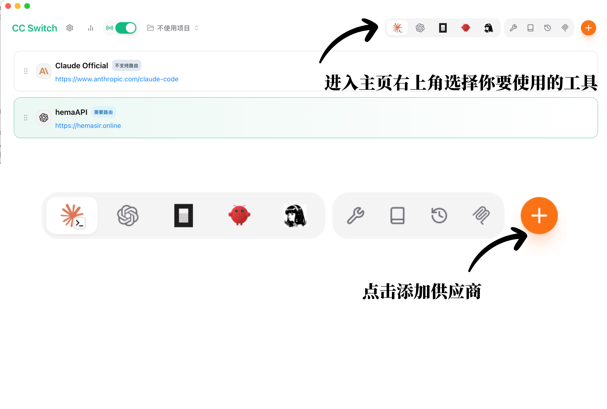
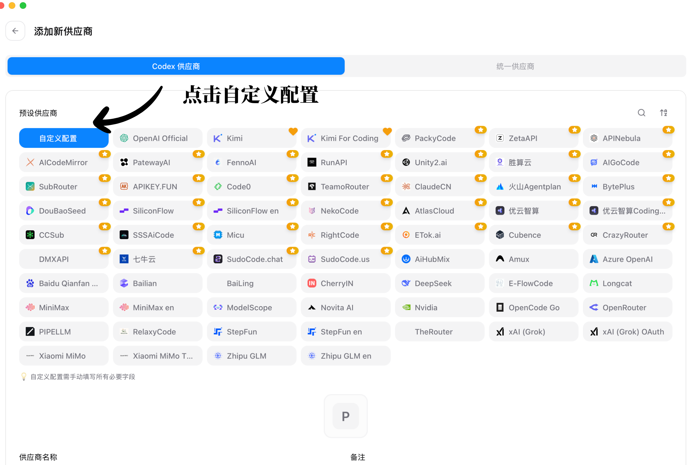
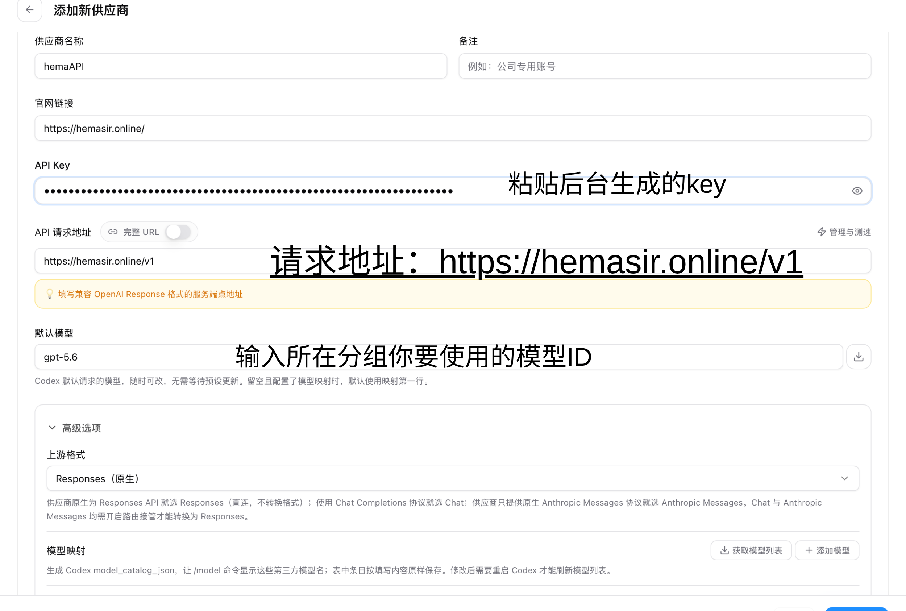
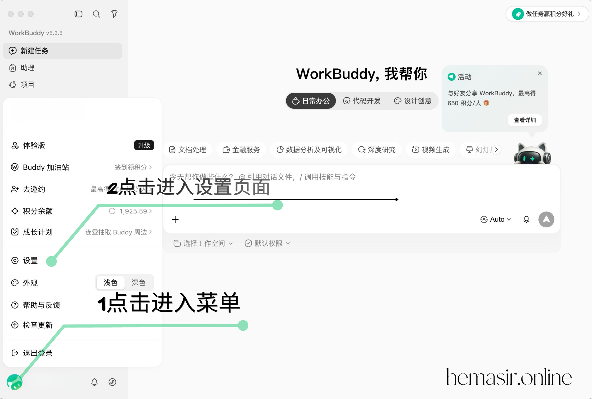
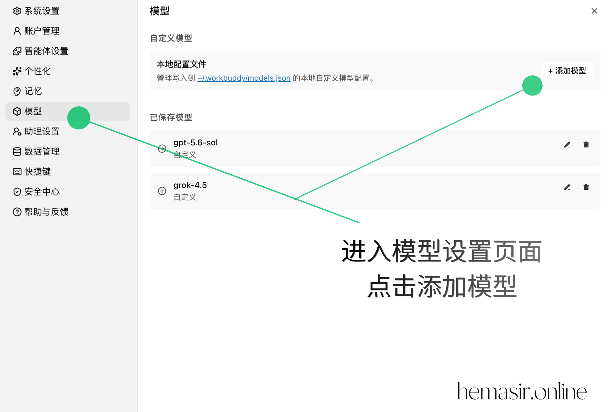
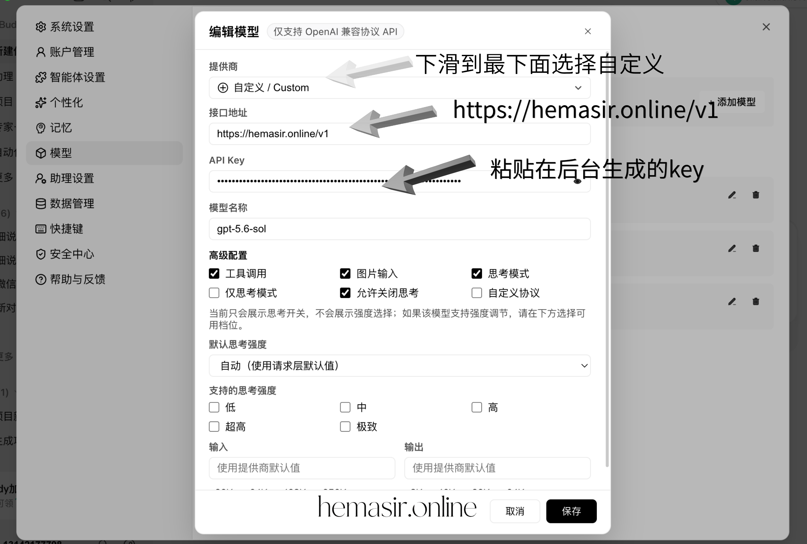
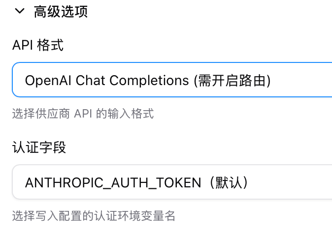
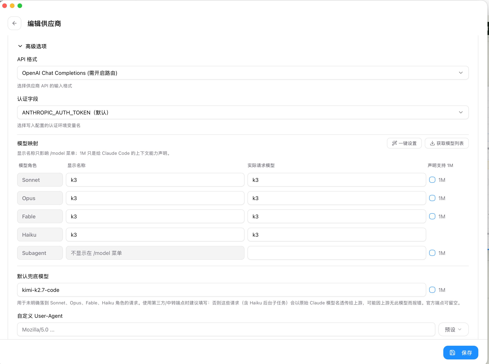
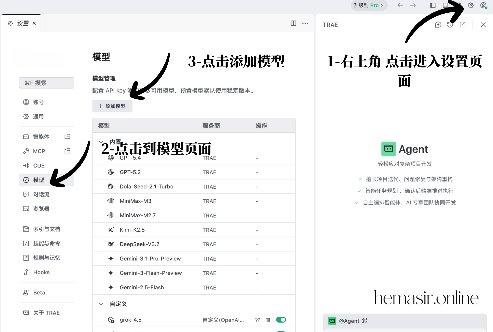
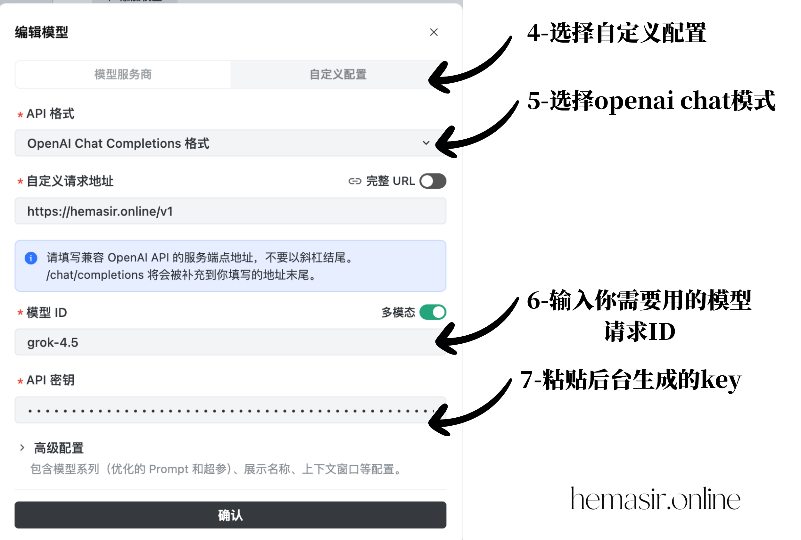

hemaAPI
hemaAPI
HEMA API / CCS
工具接入文档
所有工具通过 CCS 统一配置。支持 ChatGPT、Kimi、Grok。CCS 通用配置
- 01添加供应商
打开 CCS，新增 hemaAPI 供应商或自定义供应商配置。
- 02填写连接信息
填入 hemaAPI 地址、key，并选择 ChatGPT、Kimi 或 Grok分组
- 03应用到工具
将配置激活到对应工具，重启工具后发送一条测试消息。
Codex、Claude Code、OpenCode、OpenClaw、Hermes、Cursor 都按 CCS 通用流程配置；WorkBuddy 和 TRAE 按下方单独图文步骤配置。
Codex
去创建密钥在 CCS 中选择 Codex 预设，填写 API 地址和 key，保存后重新打开 Codex。
https://hemasir.online/v1
在 CCS 首页右上角选择你要使用的工具，然后点击添加供应商。

进入添加新供应商页面，点击自定义配置。

供应商名称填写 hemaAPI，粘贴后台生成的 key，请求地址填写 https://hemasir.online/v1，默认模型填写所在分组要使用的模型 ID。

WorkBuddy
去创建密钥在设置中心，添加自定义模型，接口地址： https://hemasir.online/v1
点击左下角头像进入菜单，再点击设置进入设置页面。

进入模型页面，点击添加模型。

下滑到最下面选择自定义，接口地址填写 https://hemasir.online/v1，粘贴后台生成的 Key 后保存。

https://hemasir.online/v1
Claude Code
去创建密钥在 CCS 中选择 Claude Code 预设，填写 API 地址和 key，保存并激活后重启终端会话。
https://hemasir.online/v1
在 CCS 首页右上角选择你要使用的工具，然后点击添加供应商。
进入添加新供应商页面，点击自定义配置。
供应商名称填写 hemaAPI，粘贴后台生成的 key，请求地址填写 https://hemasir.online/v1，默认模型填写所在分组要使用的模型 ID。
Claude Code 需要选择 OpenAI Chat Completions（需开启路由）和 ANTHROPIC_AUTH_TOKEN（默认）这两个模式，并在 CCS 设置中心开启路由。

在供应商高级选项里确认 API 格式为 OpenAI Chat Completions（需开启路由），再保存配置。

OpenCode
去创建密钥在 CCS 中选择 OpenCode 预设，填写 API 地址和 key，保存并激活后发起一次测试请求。
https://hemasir.online/v1
在 CCS 首页右上角选择你要使用的工具，然后点击添加供应商。
进入添加新供应商页面，点击自定义配置。
供应商名称填写 hemaAPI，粘贴后台生成的 key，请求地址填写 https://hemasir.online/v1，默认模型填写所在分组要使用的模型 ID。
OpenClaw
去创建密钥在 CCS 中选择 OpenClaw 预设，填写 API 地址和 key，保存并激活后刷新工具连接。
https://hemasir.online/v1
在 CCS 首页右上角选择你要使用的工具，然后点击添加供应商。
进入添加新供应商页面，点击自定义配置。
供应商名称填写 hemaAPI，粘贴后台生成的 key，请求地址填写 https://hemasir.online/v1，默认模型填写所在分组要使用的模型 ID。
Hermes
去创建密钥在 CCS 中选择 Hermes 预设，填写 API 地址和 key，保存并激活后重新启动 Hermes。
https://hemasir.online/v1
在 CCS 首页右上角选择你要使用的工具，然后点击添加供应商。
进入添加新供应商页面，点击自定义配置。
供应商名称填写 hemaAPI，粘贴后台生成的 key，请求地址填写 https://hemasir.online/v1，默认模型填写所在分组要使用的模型 ID。
TRAE
去创建密钥在 TRAE 的设置里进入模型页面，添加自定义模型并填写接口地址、模型 ID 和 Key。
点击右上角进入设置页面，切换到模型页面，然后点击添加模型。

选择自定义配置，API 格式选择 OpenAI Chat Completions，接口地址填写 https://hemasir.online/v1，再填写模型 ID 和后台生成的 Key。

https://hemasir.online/v1
Cursor
去创建密钥在 CCS 中配置 hemaAPI 供应商，填写 API 地址和 key，保存后重新加载 Cursor 或对应连接。
https://hemasir.online/v1
在 CCS 首页右上角选择你要使用的工具，然后点击添加供应商。
进入添加新供应商页面，点击自定义配置。
供应商名称填写 hemaAPI，粘贴后台生成的 key，请求地址填写 https://hemasir.online/v1，默认模型填写所在分组要使用的模型 ID。